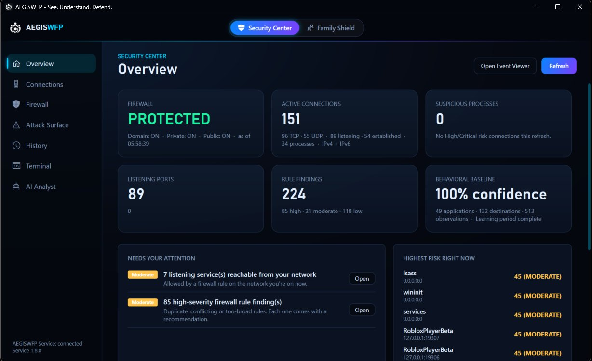
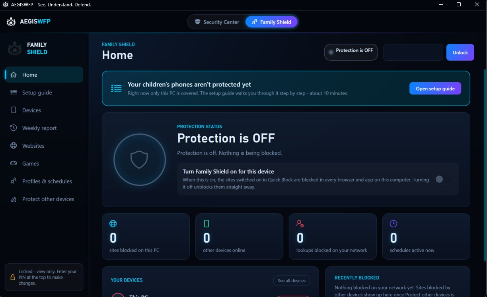

AEGISWFP
See. Understand. Defend.
A Windows firewall and network intelligence app with two sides. Security Center lists every program talking to the network with a 0 to 100 risk score and the reasons behind it, flags duplicate, conflicting and too broad firewall rules, and shows which programs are listening for incoming connections and whether the firewall really lets them be reached. Family Shield is the simple side for parents: a PIN protected filter that blocks sites and games on the PC and on every phone on the home Wi-Fi, with ready-made bedtime and homework schedules.
Only one process can change anything. The WPF app runs as the user and can only ask. A Windows Service running as LocalSystem re-checks every request, the parent PIN and every domain before it acts. Every firewall change follows one path: preview, confirm, apply, change log, rollback.
The rule it is built on is the same one behind all my Aegis tools: show what is real, never just what a switch says. The blocked list is read back from the hosts file. “Protecting 3 devices” only appears after 3 devices really used the filter. A category with no trustworthy list says “not blocking yet”.


- ▹ About 25,000 lines of C# including tests, across 12 projects with enforced boundaries
- ▹ 559 tests passing in the release check (v1.8), and 16 bugs and weak spots found and fixed before release
- ▹ Honest limits: the phone companion uses plain HTTP on the home Wi-Fi (HTTPS is next), and the installer is not code signed yet, so Windows still shows a warning
Technical details: architecture, security design, Family Shield
- ▹ The App and Service talk over a named pipe. The Service writes to Windows Firewall, the hosts file, a DNS filter on port 53 and an admin-only SQLite database
- ▹ Parent PIN stored as a salted PBKDF2 hash (210,000 iterations), with a lockout that grows up to 15 minutes
- ▹ The built-in terminal has 15 fixed commands, typed arguments and no shell behind it, so command injection has nowhere to go
- ▹ Hosts file changes stay inside AEGISWFP’s own markers, checked against a strict domain allow-list in the Service and again before writing
- ▹ The DNS filter answers home network devices only and is rate limited per device, so it can never become an open resolver
- ▹ The phone companion uses a one-time QR code that is swapped for a new key on first scan, and every tap is signed with HMAC-SHA256, a time stamp and a one-use random value
- ▹ An optional AI analyst can explain findings in plain words. It is off by default, uses your own API key, and its code cannot reach the firewall or the Service
- ▹ Family Shield safety rules: it never cuts anyone off, never pauses the parent’s PC, and never damages the hosts file